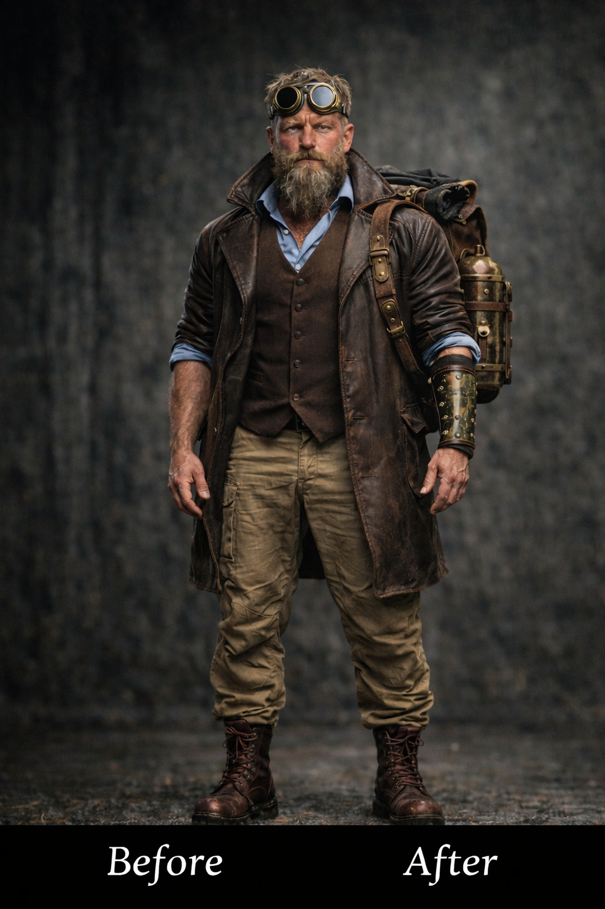
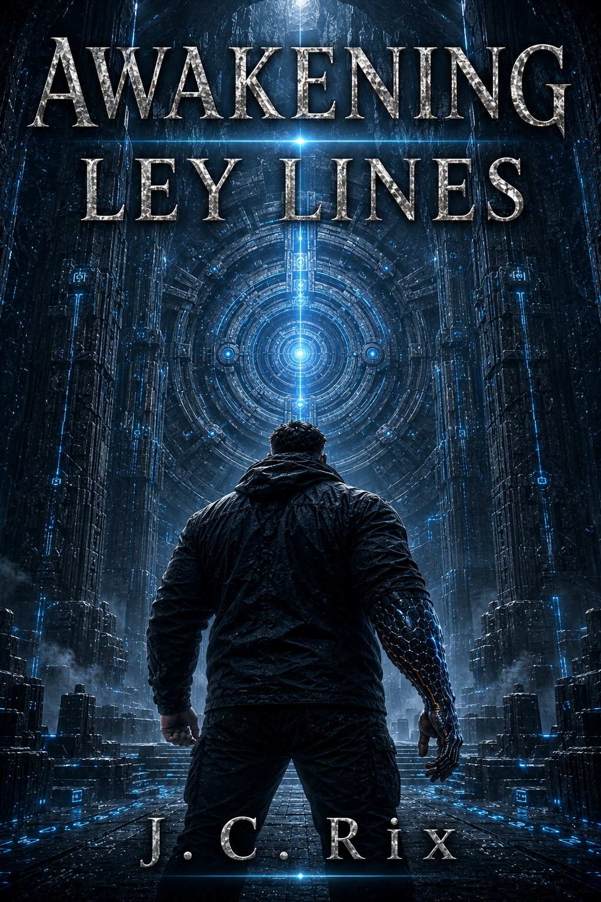
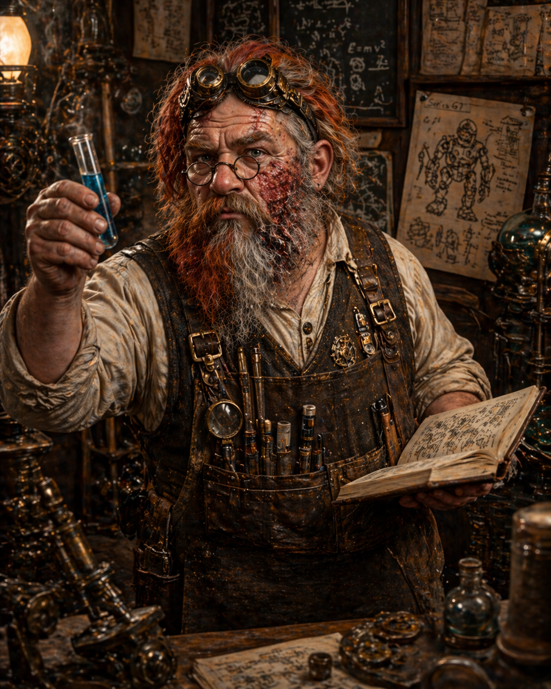
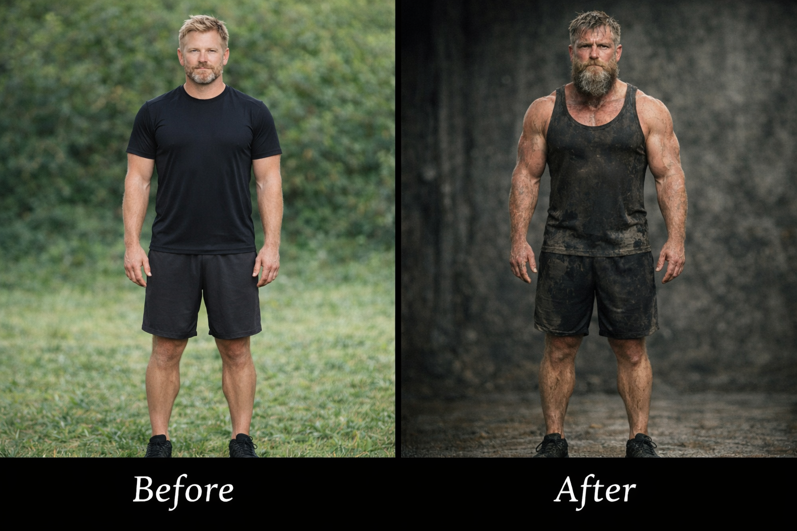

Richard Graye
Forged by impossible circumstances and decades under crushing gravity, Richard becomes the unwilling center of discoveries that will forever change humanity's understanding of itself.

An ancient vault. A forgotten civilization. A discovery that will reshape humanity forever.
Beneath the ice, Richard Graye discovers more than the remains of an ancient world. What waits inside the vault challenges everything humanity believes about history, power, identity, and its place in the universe.
Blending science fiction, epic fantasy, ancient mysteries, advanced technology, and extraordinary transformation, Awakening Ley Lines begins a journey into a world where myth may be memory and humanity's future may depend on what was buried in its past.
Available in Kindle Unlimited, Kindle, and paperback.
Deep beneath Antarctica, an impossible discovery waits. What begins as an archaeological expedition quickly becomes something far greater—a confrontation with forgotten history, unimaginable technology, and powers that humanity was never meant to uncover.
Richard Graye has spent his life surviving the impossible. When an ancient vault is uncovered beneath the ice, he is drawn into a mystery stretching back thousands of years.
Hidden civilizations. Living legends. Advanced technology mistaken for myth. Ancient enemies who never truly disappeared.
Every answer uncovers another question until Richard realizes humanity has misunderstood its own history... and its future depends on awakening what has remained dormant beneath the Ley Lines.
Every great adventure begins with extraordinary people.

Forged by impossible circumstances and decades under crushing gravity, Richard becomes the unwilling center of discoveries that will forever change humanity's understanding of itself.

Brilliant. Relentless. Eccentric. Bramdur refuses to accept limits where discovery is concerned and continually pushes others to ask impossible questions.
Courage isn't always measured by strength. Sometimes it is measured by the choices made when everything familiar begins to disappear.
Awakening Ley Lines explores a universe where mythology may simply be misunderstood history and technology has advanced far beyond modern imagination.
Not every creature flies because nature intended it. Some were engineered. Ancient technology and biological design merge into machines that blur the line between life and invention.

Some discoveries change what you know. Others change who you become. Richard's journey will test the limits of humanity, identity, and evolution itself.
"History remembers legends. Sometimes legends remember history."— Awakening Ley Lines
Awakening Ley Lines is the first book in The Ley Lines Chronicles, an expanding science-fantasy series exploring ancient civilizations, hidden power, transformation, forgotten history, and humanity's place in a much larger universe.
The discovery beneath the ice opens the door to mysteries that have remained buried for thousands of years.
Richard Graye's journey is only beginning. Future books will expand the mystery, reveal more of the civilizations connected to the Ley Lines, and explore the consequences of what has awakened.
Available now in Kindle Unlimited, Kindle, and paperback through Amazon.
Follow for character reveals, world-building, artwork, future releases, and updates from The Ley Lines Chronicles.